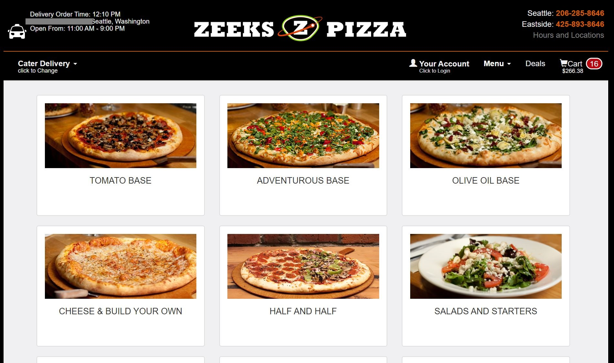

Usability Test for Zeeks Pizza Mobile Website
Zeeks Pizza is a Seattle based Pizza business with 17 locations. Zeeks Pizza's website is www.zeekspizza.com. This post presents the results of a round of usability testing on the Zeeks Pizza website.
The Mobile Home Page for Zeeks Pizza.Mobile Usability Test Overview
Test Purpose
Identify the top issues that users encounter when creating a mobile online order from Zeeks Pizza.
Test Methods
The tests were conducted over Zoom meeting. Zeeks Pizza mobile website was accessed on an iPhone and a Samsung phone. The full script of this usability test can be downloaded here.
Participant Demographics
The usability tests were conducted with 2 participants on May 2nd. The participants were heavy internet users for both work and personal tasks. None of the participants had used the Zeeks Pizza website to order pizza before.
Test Scope
Participants were asked to complete these 3 tasks on the mobile version on the website.
- Task 1: Find out when the Zeeks Pizza nearest you is open today.
- Task 2: Determine if Zeeks Pizza will deliver pizza to your home.
- Task 3: Prepare an online order of a complete meal for your household.
Test Results
Mobile Vs Laptop Experience
The initial pizza ordering page.Interestingly, the biggest issue users experienced on a laptop didn't phase the mobile test participants. While laptop users were confused by the number of pizza options and the categorization of pizzas, mobile users jumped right into selecting pizzas. The pages are very similar on mobile and laptop, so I was suprised to see such a difference and wonder if I was see different results with a larger pool of participants.
 Laptop version of the initial ordering page confused users, while the mobile version did not.Users of both versions of the site praised the visibility of the Order Online button and were easily able to start the online orders process.
Neither of the mobile test partcipants tried to configure a half and half pizza, so I wasn't able to see if that continued to be an issue on the mobile site. However one participant commented on how easy it was to configure a pizza on the mobile site.
Mobile Issue 1: User Log-in Required
Before participants could begin an online order, they are required to log-in or sign up with the site.Both participants expressed mild frustration with having to create a sign-in to begin the ordering process and before they could view the online ordering menu. This step was not required for the laptop version.
Proposed Improvement 1
Follow the same ordering process as the other version of the site and only require users to provide a delivery address before starting the order. The rest of the user details can be collected during check-out.
Issue 2: Pint or Scoop?
The photos for pint sized serving and single scoop servings of ice cream are the same.While this issue is not unique to mobile, the user who added ice cream to their order was suprised at the low cost of some of the ice cream. They had added both pints and single scoops to their card without noticing the difference. The photo for a single serving of ice cream is the same as the photo of a pint of ice cream.
Proposed Solution 2
Use different photos for pints and single servings of ice cream. Possibly use the photo of the pint carton for pints and a photo of a scoop of ice cream for the single servings. Also, I recommend clarifying the label of the "single" ice cream option to a word that better describes its size relative to a pint. This could something like be "mini cup" or "5 oz."
No Longer an Issue...
The Greenlake Store hours have been updated to accurately reflect temporary hours.In the past week, Zeeks Pizza has updated the hours throughout their website to reflect the current temporary store hours. This means that users will see the correct store hours no matter where they look. Both mobile and laptop users will benefit from this correction.
This is great news because this week's mobile testing re-iterated the importance of this correction because users continues to use different paths to look up store hours. Half of the users referenced the temporary store hours announcement while the other half looked up their closest location first.